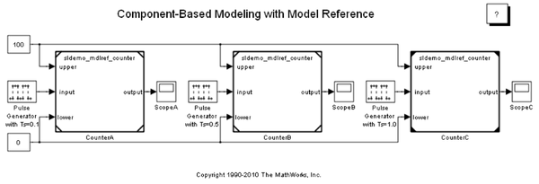
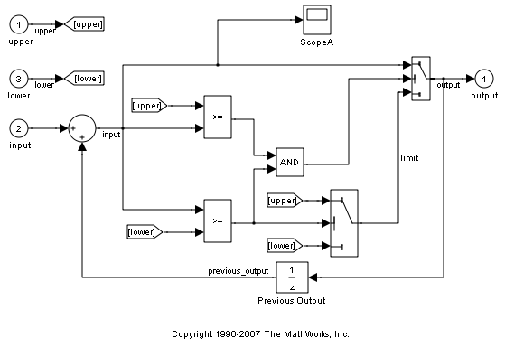

Component-Based Modeling with Model Reference
This demo introduces some basic Model Reference concepts. It walks you through simulation and Real-Time Workshop® code generation of a model that references another model multiple times.
Contents
Demo Requirements
During this demo, Simulink® and Real-Time Workshop generate code in a Simulink project directory created in the current working directory. If you do not want to (or cannot) generate files in this directory, you should change your working directory.
Real-Time Workshop is required to generate Model Reference Real-Time Workshop target to be deployed in standalone applications.
If you plan to alter the demo models:
1. Preserve the demo in its original state by copying the following files from your MATLAB® installation directory, without changing their names, to a different directory:
toolbox/simulink/simdemos/simfeatures/sldemo_mdlref_basic.mdl toolbox/simulink/simdemos/simfeatures/sldemo_mdlref_counter.mdl
2. Change your current working directory to the directory to which you copied the files
3. Continue with the demo
About Model Reference
Open the demo model sldemo_mdlref_basic. This model contains three Model blocks: CounterA, CounterB and CounterC. These blocks reference the same model, sldemo_mdlref_counter, which is a separate model and not a subsystem of sldemo_mdlref_basic.
Simulation Mode
The Model block has a parameter named SimulationMode that controls how the referenced model is simulated. If the parameter is set to Accelerator, the referenced model is simulated through code generation. If the parameter is set to Normal, the referenced model is simulated in interpreted mode. In this demo model, the Model blocks CounterA and CounterB reference sldemo_mdlref_counter in Normal mode, which is indicated by the hollow corners on the Model block icon. The other instances, CounterC, references sldemo_mdlref_counter in Accelerator mode, which is indicated by the filled corners on the Model block icon. To learn more about interacting with models that are referenced more than once in Normal mode, see the demo sldemo_mdlref_depgraph.
Figure 1: The demo model, sldemo_mdlref_basic
Figure 2: The referenced model, sldemo_mdlref_counter
Model Reference has several advantages over subsystems:
- You can develop the referenced model independently from the models in which it is used.
- You can reference a model multiple times in another model without having to make redundant copies.
- Multiple models can reference a single model.
- The referenced model is not loaded until it is needed, a feature called Incremental Loading. Incremental loading speeds up model load times.
- If a model is referenced in Accelerator mode, Simulink and Real-Time Workshop create special binaries to be used in simulations. If the binaries are up-to-date, because the referenced model has not changed since the binaries were created, no code generation occurs when models that use these binaries are simulated or compiled. This is called Incremental Code Generation. The use of binaries increases simulation speed and modularity in code generation.
- Generating Real-Time Workshop standalone applications for a model with Model blocks also takes advantage of incremental code generation.
Simulation Through Code Generation (Does not require Real-Time Workshop®)
Simulation of a model that references other models in Accelerator mode requires the generation of code and a binary file called the Simulation Target for each unique referenced model. This process does not require Real-Time Workshop. For this demo, a simulation target is built for the sldemo_mdlref_counter model. You can create the Simulation Target by any of the following actions:
- Updating sldemo_mdlref_basic
- Simulating sldemo_mdlref_basic
- Issuing the command:
slbuild('sldemo_mdlref_counter','ModelReferenceSimTarget')
Remarks:
- If a model is referenced in Normal mode, the simulation target is not built for that referenced model.
- Once the simulation target is built, subsequently simulating or updating the model does not trigger a rebuild of the referenced model's simulation target unless the referenced model has changed.
- Turn on the sample time colors for sldemo_mdlref_basic. Note that the Model blocks have inherited different sample times. The Model Blocks inherit their sample times if the referenced model does not explicitly specify a sample time.
Code Generation for Standalone Applications (Requires Real-Time Workshop)
When creating a standalone executable for sldemo_mdlref_basic, the code and binaries for the Real-Time Workshop Target of sldemo_mdlref_counter are first generated. The necessary Real-Time Workshop Targets are built if they are not up-to-date. You can build the Real-Time Workshop target for sldemo_mdlref_counter and the standalone executable for sldemo_mdlref_basic by any of the following actions:
- Building the standalone executable for sldemo_mdlref_basic.
- Building the Model Reference target of sldemo_mdlref_counter, followed by building the standalone executable for sldemo_mdlref_basic.
Remarks:
- Once the Real-Time Workshop target of sldemo_mdlref_counter is built, subsequent builds of sldemo_mdlref_basic do not trigger a rebuild of sldemo_mdlref_counter unless sldemo_mdlref_counter changes (Incremental Code Generation).
- Note that the code generated for the referenced model sldemo_mdlref_counter is reused.
- The HTML report of the generated code for sldemo_mdlref_basic has a link to the HTML report of the generated code for sldemo_mdlref_counter in the Referenced Model section.
Build the Standalone Target and view the HTML report of the generated code
Incremental Loading Demo
Close sldemo_mdlref_counter and sldemo_mdlref_basic and then re-open sldemo_mdlref_basic. At the MATLAB prompt issue the command:
find_system('type','block_diagram')
The referenced model is not listed because it is not loaded. Right click on any Model block and select Open Model. At the MATLAB prompt, issue the command:
find_system('type','block_diagram')
The referenced model is now listed, illustrating how incremental loading works.